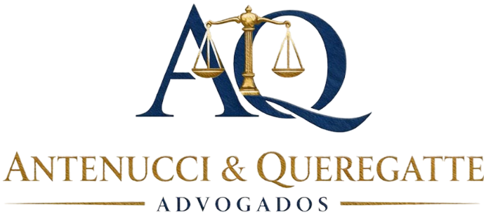

Direito de Família e Sucessões
Cada situação familiar possui particularidades. A orientação jurídica permite compreender os direitos, deveres e possibilidades previstas na legislação.
Como podemos ajudar
As regras mudam conforme o caso. Por isso, cada situação é analisada individualmente.
Informações jurídicas sobre divórcio, separação, direitos e deveres das partes.
Para quem precisa receber ou para quem paga mais do que pode.
Regras claras de convivência, pensando na segurança dos filhos.
Formalizar ou encerrar uma união e regularizar acordos informais.
Entenda como funciona a divisão de bens e quais regras podem ser aplicadas em cada situação.
Regularizar bens para poder vender, transferir ou dividir.
Quem vai te atender
Você não precisa decidir no escuro. Nossos advogados analisam a sua situação, explicam quais regras se aplicam e esclarecem as possibilidades jurídicas aplicáveis a cada situação.
Conte rapidamente a sua situação para a nossa equipe.
O advogado analisa o seu caso e explica os seus direitos.
Você recebe os honorários e decide se quer seguir.
Dúvidas comuns
Os honorários são apresentados depois da análise do seu caso e antes de qualquer contratação. Você sabe o valor antes de decidir.
Sim. Do primeiro contato à consulta, tudo acontece online, sem precisar se deslocar até um escritório.
Pelo WhatsApp. A equipe pergunta qual é a sua situação, em que cidade e estado você está e se já existe processo ou acordo. Depois, a consulta com o advogado é agendada, online.
Depende do caso. Nem tudo precisa virar processo: muitas situações se resolvem por acordo ou em cartório. O advogado indica o caminho adequado para o seu.
Os critérios variam conforme cada caso e estão previstos na legislação. Por isso é importante buscar orientação jurídica antes de assinar qualquer acordo. Você entende seus direitos e decide com segurança.
O valor da pensão depende da realidade de cada família. Na análise, o advogado explica o que se aplica ao seu caso e qual caminho seguir.
Pode. Essa é uma das primeiras perguntas do atendimento, e o advogado avalia o seu caso a partir do que já foi feito.
Você conhece quem vai te atender antes mesmo do contato, pelos vídeos e pelo perfil do escritório. E os honorários são apresentados antes de qualquer contratação, sem surpresas.
É exatamente isso que a análise individual responde. Conte a sua situação e receba uma orientação clara.
Fale agora com o escritório e entenda o que se aplica ao seu caso.